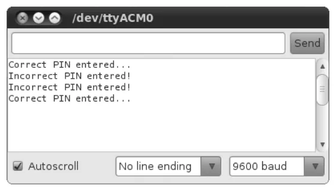

In this project, we’ll create the beginning part of a keypad-controlled lock. We’ll use the basic setup described in the sketch in Listing 9-1, but we’ll also include a secret code that will need to be entered on the keypad. The Serial Monitor will tell the user who types a code into the keypad whether the code is correct or not.
The sketch will call different functions, depending on whether the six-digit secret code is correct. The secret code is stored in the sketch but is not displayed to the user. To activate and deactivate the lock, the user must press * and then the secret number, followed by #.
The Sketch
Enter and upload this sketch:
// Project 33 - Creating a Keypad-Controlled Lock
// Beginning of necessary code
#include "Keypad.h"
const byte ROWS = 4; // set display to four rows
const byte COLS = 3; // set display to three columns
char keys[ROWS][COLS] =
{{'1','2','3'},
{'4','5','6'},
{'7','8','9'},
{'*','0','#'}};
byte rowPins[ROWS] = {5, 4, 3, 2};
byte colPins[COLS] = {8, 7, 6};
Keypad keypad = Keypad( makeKeymap(keys), rowPins, colPins, ROWS, COLS );
// End of necessary code
❶ char PIN[6]={'1','2','3','4','5','6'}; // our secret number
char attempt[6]={0,0,0,0,0,0};
int z=0;
void setup()
{
Serial.begin(9600);
}
void correctPIN() // do this if the correct PIN is entered
{
Serial.println("Correct PIN entered...");
}
void incorrectPIN() // do this if an incorrect PIN is entered
{
Serial.println("Incorrect PIN entered!");
}
void checkPIN()
{
int correct=0;
int i;
❷ for ( i = 0; i < 6 ; i++ )
{
if (attempt[q]==PIN[q])
{
correct++;
}
}
if (correct==6)
{
❸ correctPIN();
} else
{
❹ incorrectPIN();
}
for (int zz=0; zz<6; zz++) // remove previously entered code attempt from
{
attempt[zz]=0;
}
}
void readKeypad()
{
char key = keypad.getKey();
if (key != NO_KEY)
{
❺ switch(key)
{
case '*':
z=0;
break;
case '#':
delay(100); // removes the possibility of switch bounce
checkPIN();
break;
default:
attempt[z]=key;
z++;
}
}
}
void loop()
{
❻ readKeypad();
}How It Works
After the usual setup routines (as described in Listing 9-1), the sketch continually “listens” to the keypad by running the function readKeypad() at ❻. After a key is pressed, the value of the key is examined using a switch-case statement at ❺. The values of the keys pressed on the keypad are stored in the array attempt[], and when the user presses #, the function checkPin() is called.
At ❷, the values of keys pressed are compared against the PIN stored in the array PIN[] at ❶, which holds the secret number. If the correct sequence is entered, the function correctPin() at ❸ is called, where you can add your own code to execute; but if the incorrect sequence is entered, the function incorrectPin() is called at ❹. Finally, once the user’s entry has been checked, it is removed from memory and the code is ready for the next test.
Testing the Sketch
After you’ve uploaded the sketch to the Arduino, open the Serial Monitor window, press the asterisk key (*) on the numeric keypad, type the secret number, and then press the pound sign key (#) when you’ve finished. Try entering both correct and incorrect numbers. Your results should be similar to the output shown in Figure 9-4.

This example served as a perfect foundation for your own PIN-activated devices, such as locks, alarms, or anything else you can imagine. Just be sure to replace the code in correctPIN() and incorrectPIN() with the required code to run when a correct or incorrect sequence is entered.